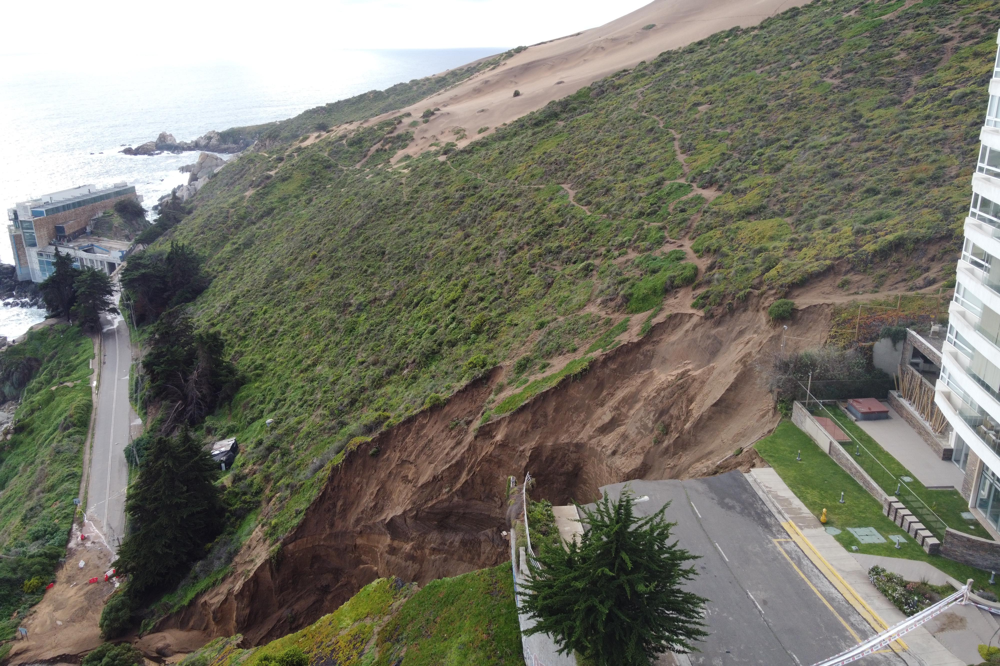

Sin edificios: así eran las dunas de Concón donde se produjo el socavón antes del boom inmobiliario
Tras el reciente socavón provocado en el campo dunar de la Quinta Región, actualmente atestado de edificios, se instaló nuevamente la polémica en torno a la viabilidad de estos proyectos. Una colección de Enterreno muestra cómo era el sector entre los años 50 y 80 cuando no había más que arena.
Luego de las intensas lluvias que este año han golpeado a la zona central, uno de los con más agua caída en los últimos años, las consecuencias no se hicieron esperar. Una de las zonas afectadas fue Concón, puntualmente un edificio (Kandisky) que registró un enorme socavón a pocos metros de la edificación, produciendo que de manera inmediata sus habitantes tuvieran que desalojarlo.
No fue el único damnificado. Ahora, otro socavón amaneza a los residentes del sector. El segundo socavón apareció tras las lluvias del lunes en la madrugada, en la Avenida Borgoño de Viña del Mar, lo que dejó al edificio Kandinsky en medio de dos enormes agujeros y amenzando ahora al edificio Miramar, contiguo al anterior, quedó al borde de la nueva cavidad producida por este último hundimiento de terreno, el que también debió ser evacuado completamente.

Así eran las dunas de Concón donde se produjo el socavón antes del boom inmobiliario
Este lugar ubicado en la Quinta Región, antes de ser un sector habitacional, era un punto recurrente para los habitantes de la zona para ir a pasear los fines de semana, y la práctica de deportes. No existían edificios, apenas unas pocas casas. No había más que arena (ver fotografías a continuación).
Las dunas de Concón, oficialmente llamadas Campo dunar de la Punta de Concón, tiene un origen geológico que data del Período Cuaternario, y se ubican en una terraza marina a más de 30 metros sobre el nivel del mar. Además, cuentan o contaban con una importante flora y fauna nativa.
El 5 de agosto de 1993 fue nombrado Santuario de la Naturaleza por el Decreto 481 del Ministerio de Educación de Chile, mientras que el 28 de abril de 1994 se restringió el área protegida a 12 de las 45 hectáreas totales del conjunto, mediante el Decreto 106 del mismo ministerio.
Esto último abrió el escenario para la construcciones de las edificaciones que hoy son tan cuestionadas, ya que los propietarios de los terrenos tenían la posibilidad de vender los sitios, más aún considerando su gran valor comercial. En 2006 las hectáreas protegidas pasaron de 12,8 a 21,8